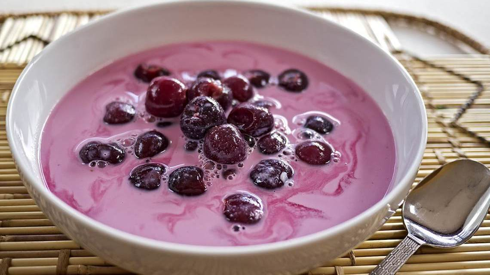

Meggyleves

Description
Traditional Hungarian fruit soups are very popular all over the country and made from a wide variety of fruits, from apple to sour cherry. Sour cherry soup is a traditional summertime treat in Hungary, where it is known as meggyleves (sour cherry soup). Every Hungarian family has its own unique recipe for sour cherry soup. In Hungary, it is generally served before the main course.
Fruit soups are definitely quite different than any soup you have ever made. Very refreshing, with a nice balance of sweet and sour. This recipe is simple to make and the result is a truly refreshing and delicious soup.
Ingredients
- 500 grams (17.6 ounces) of sour cherries - pitted
- 3 tablespoons of sugar
- 1 cinnamon stick
- 10-15 pieces of cloves
- 200 ml (3/4 cup) of heavy cream (20-30%)
- 1000 ml (4 cups) of water
- Juice of half a lemon
Steps
- In a soup pot cook the pitted sour cherries in water with 3 tablespoons of sugar, the cloves and the cinnamon stick until cherries are cooked, it takes about 5-10 minutes.
- Remove the pot from the heat. In a bowl, mix the heavy cream with some soup liquid and pour this mixture back into the soup pot. (You cannot add the cream directly to the hot liquid, as it will cause it to curdle. You need to temper the cream first.)
- Bring it back to a boil. When it starts boiling, turn the heat off and add the lemon juice slowly, spoon by spoon. Taste it. It is a refreshing soup with a nice balance of sweet and sour. Add more sugar or lemon juice if necessary.
- Cool the soup to room temperature in a cold water bath and refrigerate until cold.